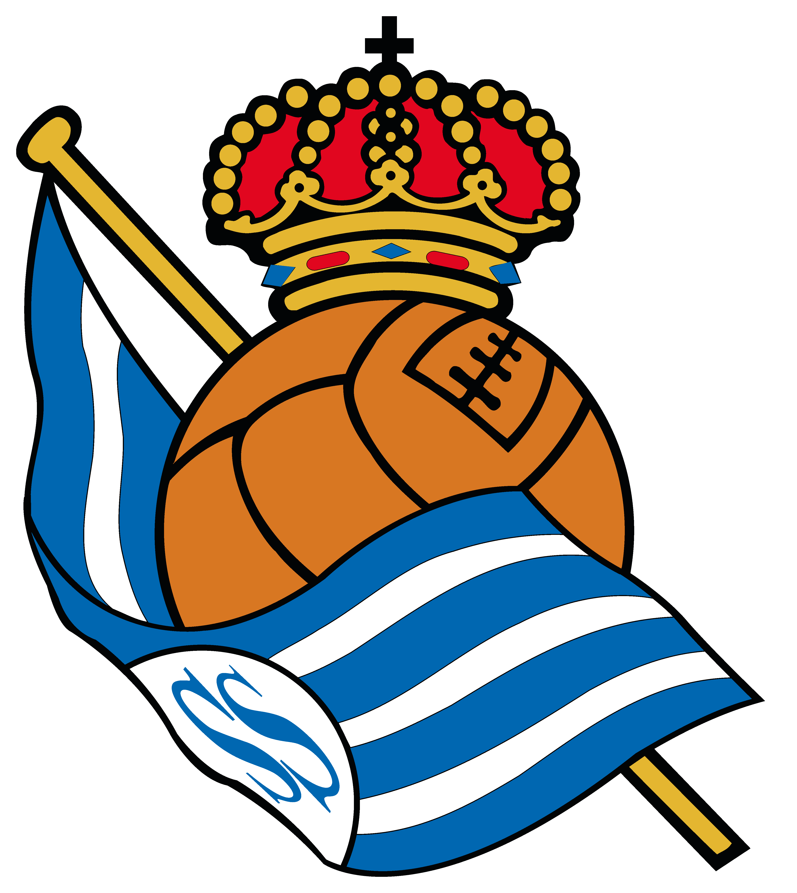

¡Bienvenido a la web oficial de la Real Sociedad!

La Real Sociedad de Fútbol , conocida comúnmente como Real Sociedad, es un prestigioso club de fútbol con sede en San Sebastián , España. Fundado en 1909 , el club ha sido un pilar del fútbol español a lo largo de su historia. La Real Sociedad es reconocida por su estilo de juego caracterizado por un enfoque en el juego de posesión y un compromiso con el desarrollo de talento local a través de su cantera. El equipo ha experimentado éxitos notables a nivel nacional e internacional y ha sido un contendiente en la Liga Española y otras competiciones. La pasión de la Real Sociedad por el fútbol se refleja en su ferviente base de seguidores y su compromiso con los valores deportivos y comunitarios. El club no solo se destaca en el campo de juego, sino que también trabaja activamente en proyectos de responsabilidad social corporativa.
| Copa del Rey | La Liga | Supercopa de España |
|---|---|---|
| 1909 | 1981-1982 | 1982 |
| 1987 | 1982-1983 | |
| 2023 |